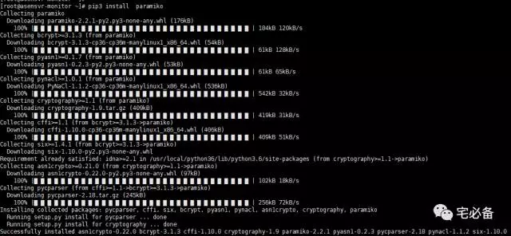
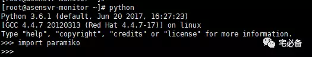

paramiko模块的安装
前面介绍了如何运用Python获取Oracle数据库的信息以及将数据存入MySQL数据库中
我们知道对于运维Oracle数据库不能忽略系统的性能指标包括CPU内存等
这个专题将介绍如何使用Python监控linux/Unix服务器的性能指标
其中Linux需要安装sysstat包，一般都会默认安装，没有请单独安装
Unix由于我公司只有HP-Unix，所以命令是在HP上运行的，其他Unix系统请使用各自的
环境设置
Linux系统为 Centos 6.8
Python环境为 Python 3.6
连接Unix类服务器模块: paramiko
paramiko模块的安装
Python中连接Unix/linux服务器的模块有很多，例如pxssh等，但是我在实际写程序的时候发现他们会有各种各样的问题，最后挑到 paramiko这个模块，如大家有更好的欢迎推荐
这里我们采用pip3命令安装，会自动下载缺失的模块
pip3 install paramiko

官方使用文档
http://docs.paramiko.org/en/2.2/
上面为官方使用文档，中文可百度之，很多的
验证安装

import paramiko 无报错说明安装导入成功
源码位置
全部代码请查看我的Github主页
https://github.com/bsbforever/wechat_oms
今天就讲下如何安装paramiko 模块
下节开始进入正题讲如何连接并执行指令